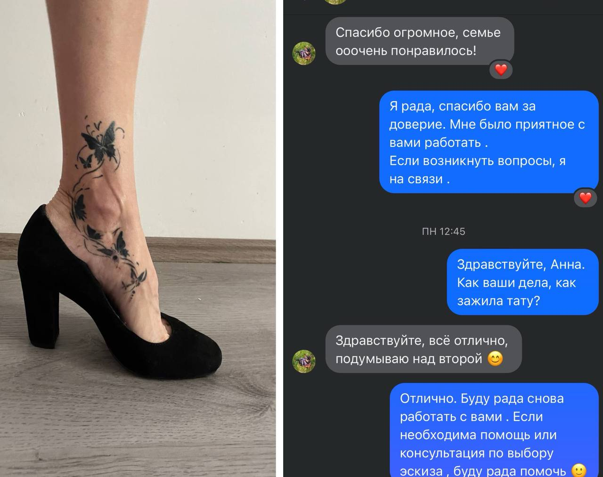
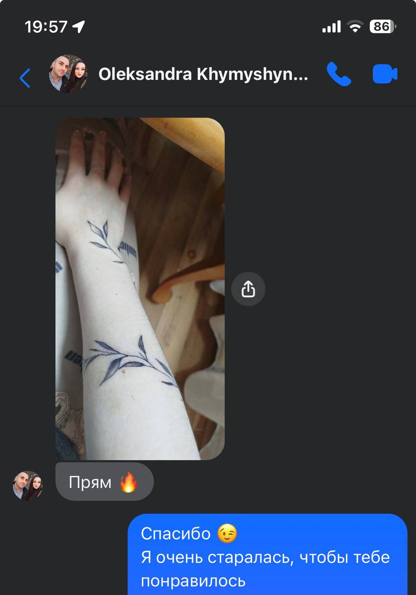
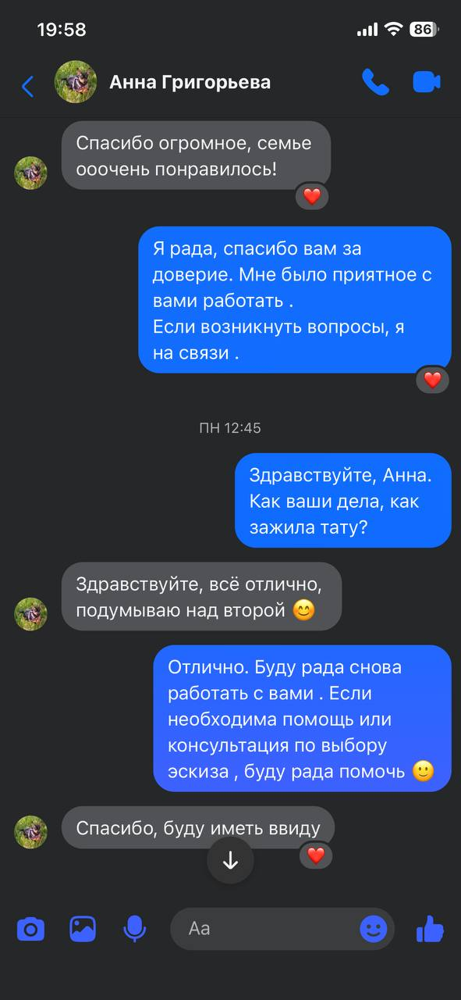
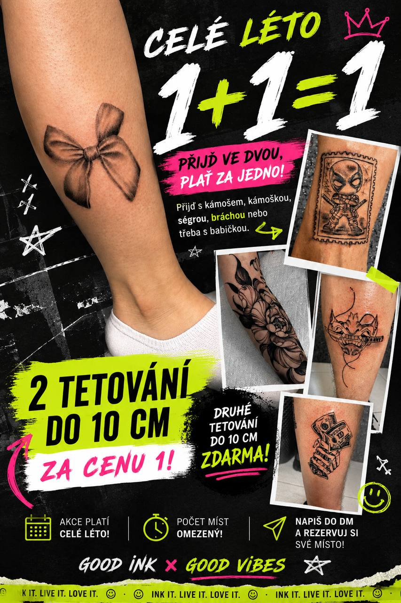

Tattoo Artistry
Specializujeme se na kvalitní tetování šité na míru vašim představám. Každý motiv vytváříme s důrazem na preciznost, hygienu a dlouhou životnost.

 Natalia Kravchenko / Tatérka
Natalia Kravchenko / Tatérka
O mně & filozofie
Jmenuji se Natália a tetování je pro mě způsob, jak pomáhat lidem cítit se ve své kůži lépe. Každý návrh tvořím na míru – od první skicy až po finální aplikaci. Důležitá je pro mě komunikace, bezpečí a radost z výsledku.
„Tetování je osobní symbol, který vám zůstane na celý život. Přistupuji k němu s respektem a láskou k detailu.“
Co děláme
Old School Tattoo
Tradiční tetování s výraznými konturami a sytými barvami. Kotvy, růže, vlaštovky – nadčasové motivy, které nikdy nevyjdou z módy.
Floral Tattoo
Jemné květinové a rostlinné motivy, které krásně kopírují křivky těla. Elegantní, přirozený a nadčasový vzhled.
Fine Line
Ultra tenké linky, geometrické tvary a drobné detaily. Perfektní pro minimalistický vzhled, písmo nebo malé symboly.
Co říkají klienti




1 + 1 = 1
Přijďte si vyzkoušet tetování za zvýhodněnou cenu! Sledujte náš Instagram a získejte 15% slevu na vybrané motivy po celý červen.
Zjistit více →Časté dotazy
Napište mi zprávu na Instagram. Popište svůj nápad (velikost, místo, styl), domluvíme konzultaci a pak termín samotného tetování.
Den předem nepite alkohol a neužívejte léky na ředění krve. Pořádně se vyspěte, najezte se a vezměte si pohodlné oblečení, které nebrání přístupu k místu tetování.
Používáme hojivé fólie (second skin). Noste ji 3–4 dny, pak opatrně odlepte, tetování jemně omyjte antibakteriálním mýdlem a 2–3krát denně mažte doporučeným krémem po dobu 2 týdnů.
Minimální cena začíná na 1500 Kč (kryje sterilní materiál). Celková cena závisí na velikosti, složitosti motivu a čase práce. Přesnou nabídku dostanete po konzultaci.
Bolest je individuální a závisí na místě. Znecitlivující krémy nedoporučuji – mění strukturu kůže, což může zhoršit výsledek i hojení.
Ano, ale záleží na tmavosti a velikosti původního motivu. Vzhledem k jemným liniím, které dělám, je potřeba osobní nebo online konzultace, abychom zjistili, zda to půjde.
1. MYTÍ
Správně myjte min. 2x denně antibakteriálním mýdlem, jemně s ohledem na stroupky. Mýdlo důkladně opláchněte. Osušte čistými ubrousky "poklepáním". Nakonec namažte mastí na tetování.
2. SLUNÍČKO
Sluníčko je ohrožující faktor jak u čerstvého tak u zahojeného tetování. Opalování se musíte vyhnout jak měsíc před tetováním, tak zhruba 3 měsíce po tetování, jelikož tak dlouho se pigment v kůži usazuje. Používejte tedy vždy na zahojené tetování opalovací krém s vysokým faktorem, nebo přímo speciální opalovací krém na tetování. Během hojení na sebe určitě nic nepatelíte a tetování schovávejte pod oblečením.
3. VODA
Vlhkosti se musíte vyhýbat! Především dokud máte na tetování stroupky. Ve vlhku se stroupky odmočí a odpadnou a zanechají ránu otevřenou - to může vést k zajizvení. Krátká sprcha vás nezabije, ale bylo by zbytečné tam zůstávat déle než je třeba.
4. JAK MAZAT
Na krému se vždy domluvíme s tatérem - jedině za osvědčený produkt se vám tatér může zaručit. Mazat stačí bohatě 2x denně. Krém jemně vmasírujte do kůže a rozetřete do ztracena. Nedávejte si tam žádné tlusté vrstvy! Stačí úplné minimum aby mohla kůže dýchat!
5. POHYB
Lehký pohyb vám u čerstvého tetování nijak neuškodí. Nejvíc škodit může upnuté oblečení, nebo textil který by se vám mohl zaseknout o strup. Pokud musíte do práce, oblečte se pohodlně. Větší zátěž na tělo je problém kvůli pocení. Pokud se v práci zpotíte, dejte si pauzu a jděte si tetování umýt. Pokud jste sportovci a máte v blízké době zápas tak na tetování vůbec nechoďte. Je to jednoduché.
1. Výběr motivu
Tvoje představa motivu může být různá. Ať máš jasnou představu nebo ne, rádi s tím poradíme! – Máš motiv vymyšlený v hlavě? Perfektní! Teď už ho jen co nejdetailněji popiš táterovi/tetérce a on/ona ti ho navrhne. – Nemáš moc dobrou představivost, ale našel sis na pinterestu pár předloh? Nevadí! Rádi podle tvé předlohy nakreslíme nový a originální návrh. – Nakreslil sis svůj návrh, nebo máš návrh od někoho? Chceš ho dopracovat nebo nechceš? S tím si také poradíme!
2. Obsah zprávy
Pro plynulý průběh konverzace a abychom mohli co nejlépe vyhovět, by měla zpráva obsahovat: – Popis motivu, popřípadě reference. – Předpokládané umístění a velikost tetování. – Barevnost (černé nebo barevné?). – Zdravotní omezení? – Zda se jedná o první tetování? – Zda ti bylo 18? – Preferovaný termín? – Popřípadě zda máš nějaký budget? (hlavně u větších projektů).
3. Na jaké zprávy neodpovídáme
Bohužel v dnešní době slušnost ze sociálních sítí rychlým tempem mizí, tak bychom Vás rádi upozornili, že na některé zprávy vám možná neodpovíme. – Pokud zpráva zní pouze "Ahoj." NEODPOVÍDÁME. – Zpráva bez představení typu "Za kolik tohle?" NEODPOVÍDÁME. – Zpráva typu: "Dobrý den, měl bych takovou zvláštní prosbu..." – intimní partie prosím netetujeme.